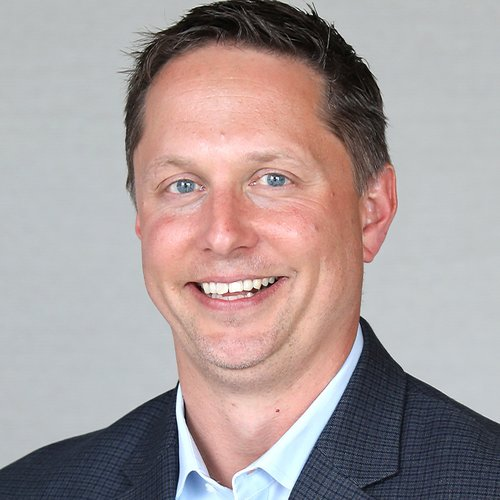

I build healthcare platforms, and the teams behind them, that scale.
I help healthcare and mission-driven organizations turn complex technology challenges into better products, stronger teams, and reliable delivery. More than 20 years building and scaling platforms, from clinical labs and pharmacogenomics to AI-enabled workflows.

Where I make the biggest difference
I work with executive teams to turn strategy into milestones an engineering team can actually deliver, then build the platform and the people to get there.
Platform modernization
Phased re-architecture with redundancy and fast failover planned in, so the business keeps running while the platform scales.
Engineering organizations
Build and develop engineering teams with clear ownership, effective delivery practices, and the right mix of employees and partners.
Clinical lab technology
LIMS, HL7 interfaces, EMR/EHR integrations, and the systems that move a lab from sample to result faster.
Security and compliance
Build information security programs and strengthen incident readiness. Align technology and controls with clinical lab accreditation requirements.
AI assisted engineering
Help teams use AI to improve delivery, automate repetitive work, and make data more useful, with human review and clear accountability.
Exit readiness
Technology diligence, scalability, and the delivery discipline PE sponsors and acquirers expect.
The right leadership for your next stage
CTO, VP, or Head of Engineering
Long-term ownership of technology strategy, platform development, and team growth for a healthcare or mission-driven organization.
- Align technology investment with business priorities
- Build leaders, strengthen teams, and improve delivery
- Guide modernization, security, and scale
Executive guidance, flexible engagement
Part-time leadership or a focused project when you need experienced technical direction without a full-time executive commitment.
- Assessment: review the platform, team, and risks; develop a prioritized roadmap
- Ongoing leadership: guide architecture, delivery, hiring, and technology decisions
- Focused initiative: support modernization, AI adoption, or technology diligence
When I can help
- Your platform needs to scale or modernize while the business keeps running.
- Your team needs clearer direction, stronger leadership, or more predictable delivery.
- You need to connect clinical workflows, lab systems, and healthcare platforms.
- You are preparing for growth, accreditation, diligence, or an acquisition.
Built from zero, scaled to exit
I've been brought in to build teams and platforms from scratch, and to evolve and mature the ones already running.
Mira Precision Health
Led the technology shift of a CLIA certified clinical lab from COVID and flu testing to commercializing pharmacogenomics, including the ToxNav oncology PGx test developed at the University of Oxford.
- Cut PGx result turnaround from several days to under 48 hours, with a path to 24
- Re-architected the platform for higher volume and lab efficiency
- Owned the information security program through CAP accreditation
Assurex Health / Myriad Genetics
Founding team technology leader. Took the GeneSight platform, commercializing PGx technology from Mayo Clinic and Cincinnati Children's Hospital, from demo quality to production, then scaled it for a decade.
- Grew from sole developer to an 80+ person organization across product, engineering, DevOps, IT, QA, and UX
- Led through CAP, CLIA, and New York State accreditation
- After the Myriad acquisition, also led the centralized CRM platform across all Myriad business units and served on the Myriad architecture team
Hive Networks
Built the product, platform, and team commercializing Cincinnati Children's Hospital's Learning Health Network model.
PublicSchoolWORKS
Evolved the platform and team through acquisition by Raptor Technologies and the PE backed integration that followed.
ActivePrime
Matured an existing platform and engineering team for the next stage of growth.
Still shipping, hands on
Personal applications I designed and built with AI as an engineering partner. Explore the demos to see how I turn everyday problems into useful products.
Health Review
Brings health metrics, workouts, and daily check-ins together to support weekly AI-assisted reviews and more informed health conversations.
What it demonstrates: data integration, personalized AI summaries, and a recurring review workflow.
Job Hunt
Helps users discover opportunities, evaluate fit, tailor application materials, and track progress through the hiring process.
What it demonstrates: agent workflows, decision support, and automation across a multi-step process.
About
I'm an engineer at heart. I love solving problems, building products, and leading teams, and I stay hands-on with architecture, design, and code.
I started writing C and C++ on distributed systems and have worked hands on in whatever stack each company needed. I come in, learn the codebase fast, and pivot the technology when the future demands it.
Based in Cincinnati. Husband and father of five. Most of my energy outside work goes to family and my own health and fitness, which is exactly why I build tools in that space.
- Data drives strategyGive teams access to useful information so they can make better decisions. AI can help turn complex data into accessible insights.
- Reduce risk through phasesBig platform changes land safely when they're planned, tested, and rolled out in stages.
- Technology should expand opportunityThe work I care most about puts better health within reach of more people, especially underserved communities.
Your next stage needs the right technology leadership.
Looking for a full-time technology leader or fractional CTO? Tell me about your organization, the challenge ahead, and the kind of support you need. Remote-first, with hybrid opportunities in the Cincinnati area.
Start with a conversation about your goals, priorities, and whether I can help.
scott@scottmroth.com